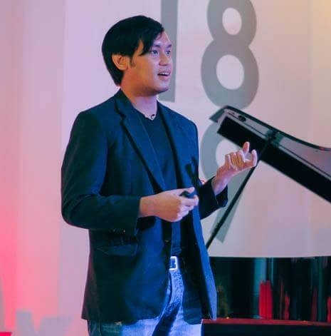

<section role="main">
	<div class="small-12 columns">
		<h1 class="mvl">{{ page.title }}</h1>
		
		<div class="row">
			<div class="large-5 column">
				
				
				
			</div>
			<div class=" large-7 column">
			
				<p class="mbm"> Mark Lester Coscolluela Lacsamana published his first website in 2003. He's currently a designer for <a href="http://olx.ph" target="_blank">OLX Philippines</a> where he designs  mobile experiences and solves problems on a day to day basis. He is also a speaker on design and creating human centered design solutions. He has been an active part of the <a href="http://pwdo.org">Philippine Web Designers Organization</a> and <a href="https://www.uxphilippines.com">UX Philippines</a> as well as founder of Moving Mobile Forward and Type Philippines.</p>
				<p class="mbm">
					Mark dabbles in calligraphy and penmanship, having his work featured in the film 'Ignacio'. If you'd like to collaborate on a project or just want to say Hi feel free to reach out.
				</p>
			</div>
		</div>
	</div>
</section>

